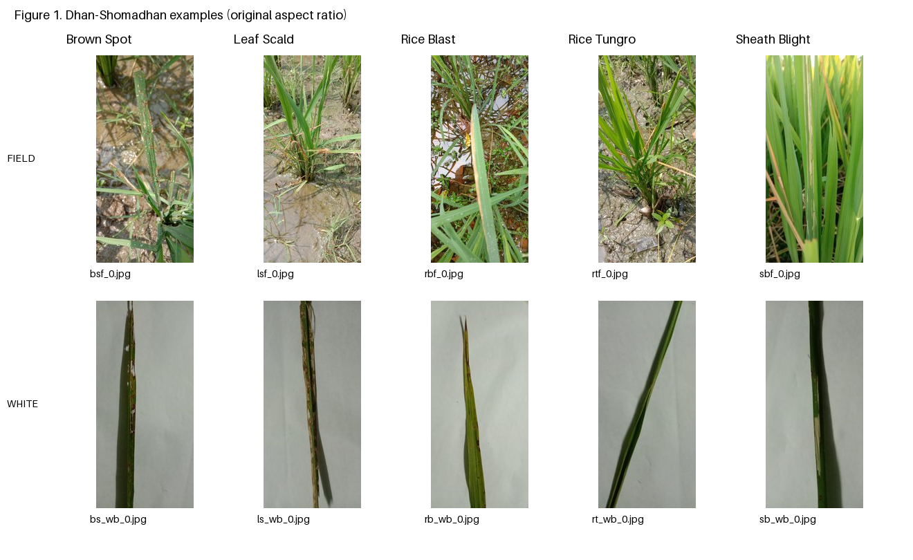

Dhan-Shomadhan
inspection and shared splits
1,106 images · 5 disease classes · 2 backgrounds · 5 reproducible holdouts
Selected policy: conservative grouping. Unresolved similarity candidates remain in the dataset and are kept together. The largest connected group has 461 images and is in training in every run. This reduces candidate-related leakage risk, but limits test coverage. A complete pairwise visual review has not been claimed.
1. Verified dataset counts
| Disease | Field | White | Total |
|---|---|---|---|
| Brown Spot | 49 | 90 | 139 |
| Leaf Scald | 74 | 143 | 217 |
| Rice Blast | 74 | 198 | 272 |
| Rice Tungro | 76 | 119 | 195 |
| Sheath Blight | 64 | 219 | 283 |
| Total | 337 | 769 | 1106 |
All 1,106 files decode; 0 exact-copy groups; 0 metadata/folder disagreements. These checks establish file and annotation consistency, not independent biological label verification.
2. Sample-image figure

Figure 1. First readable image in sorted path order for each disease/background stratum. Original aspect ratios are preserved; no lesion crops or background removal are applied. These are dataset examples, not an independent confirmation of disease.
3. Observed image challenges
| Challenge | Inspection evidence | Implication |
|---|---|---|
| Clutter and overlapping leaves | Field examples bsf_0, lsf_0 and rbf_0 include soil, water and intersecting leaves. | Preserve context initially; compare features/models on the same raw inputs. |
| Illumination and colour | Examples show green/yellow/brown variation; white paper has shadows and uneven illumination. | Inspect colour augmentation for plausibility; apply it to training only. |
| Narrow leaves and small symptoms | Portrait leaves occupy a small fraction of many images; several symptoms are near tips or edges. | Check downsampling and cropping before fixing transforms; avoid destructive preprocessing by default. |
| Class and background imbalance | 337 field versus 769 white images; 139 Brown Spot versus 283 Sheath Blight. | Stratify by disease/background; report macro-F1, per-class support and three background scenarios. |
| Repeated imagery | Candidate review includes repeated field views such as rtf_17/18 and rbf_21/22. | Keep candidate-connected groups intact within each run. |
| Annotation uncertainty | Folder aliases differ in spelling. Supplied CSV agrees with folders after explicit mapping. | Keep original labels and mapping; agreement does not establish correct pathology. |
| Quality proxies | Inventory records luminance mean/SD and resized Laplacian variance for every image. | Use for inspection; no automatic blur/brightness-based exclusions. |
4. Audit and near-duplicate policy
The screen produced 1,394 pairs. Four visually supported related pairs were recorded; 1,390 unresolved pairs were conservatively joined. The retained 1,106 images form 613 connected groups. No perceptually similar images were deleted. Inspect candidate pairs; original review decisions; effective grouping decisions.
The candidate rule is dHash64 Hamming distance ≤6 OR pHash64 distance ≤8. It was fixed before model evaluation and was not calibrated as a same-leaf detector. Crops, rotations and changes of background may evade this rule. Candidate connectivity can also merge unrelated leaves through chains of similar silhouettes.
5. Five shared holdouts
| Seed | Training | Validation | Testing |
|---|---|---|---|
| 11 | 777 | 164 | 165 |
| 22 | 777 | 165 | 164 |
| 33 | 777 | 164 | 165 |
| 44 | 777 | 165 | 164 |
| 55 | 777 | 163 | 166 |
Targets are 70/15/15. Every partition includes all ten disease/background combinations; no image, group or exact file hash crosses partitions within a run. The generator uses 200 seeded greedy starts per run. Saved counts are the achieved allocation; the heuristic does not guarantee the global optimum. These are repeated random holdouts, not five-fold CV.
Detailed split summary · Provenance and checksums
6. Loader and transform contract
The shared loader returns an RGB image, disease ID, background ID and image ID. Background is evaluation metadata. Supply model-specific transforms at loading time, with augmentation only for training. Fit any scalers, PCA, feature selection or other learned preprocessing on each training partition only. The original images remain unchanged.
| Disease | Integer ID |
|---|---|
| Brown Spot | 0 |
| Leaf Scald | 1 |
| Rice Blast | 2 |
| Rice Tungro | 3 |
| Sheath Blight | 4 |
7. Report-ready sections
Open the plain-text draft. The Problem Description draft is intended for the one-page section; placement of tables and the figure must be checked in the final report layout.
Problem Description
III. Problem Description The client requires a system that predicts which of five rice diseases is present in a supplied photograph: Brown Spot, Leaf Scald, Rice Blast, Rice Tungro or Sheath Blight. This is a five-class, single-label image-classification problem. The input is an RGB image captured in a field or against a white background; the output is one disease label. The task assumes that one of these five diseases is present. Healthy-leaf recognition, localisation of lesions and diagnosis of diseases outside this label set are outside this experiment's scope. The Dhan-Shomadhan dataset [1] contains 1,106 images in the inspected copy: 337 field images and 769 white-background images. Disease totals range from 139 Brown Spot images to 283 Sheath Blight images. Figure 1 illustrates both acquisition settings for all five classes. In the inspected examples, field images include overlapping leaves, soil, water and vegetation, making the relevant leaf less visually isolated. White-background images isolate the leaf more clearly, but contain illumination gradients, shadows and variations in leaf placement. Leaves also vary in orientation, apparent scale and visible damage. Small lesion details may be lost during resizing, while cropping can remove symptoms near the leaf tip or edge. Similar colours and lesion appearances across class folders, together with variation within each class, make global colour alone an insufficient basis for reliable discrimination. These observations motivate comparing a handcrafted baseline with pretrained ResNet-18 features and partial fine-tuning, which test whether transferable visual representations help distinguish the available classes. Background is retained as evaluation metadata. Performance must be examined separately for field, white-background and combined test images because the combined set is dominated by white-background images. Class imbalance also motivates reporting macro-F1 alongside per-class results. Repeated views of the same leaf can inflate evaluation scores if they cross partitions; related and unresolved similarity-candidate images are therefore grouped before creating five shared holdout splits. Folder labels are treated as supplied annotations, not independently verified diagnoses.
Dataset Preparation and justification
IV.1. Shared Dataset Preparation (implemented) Images were enumerated in a fixed sorted order, preserving the dataset's original paths. Explicit aliases standardised folder spelling variants and trailing whitespace to a fixed five-class mapping. The supplied metadata CSV was checked against folder labels and filenames; 0 inconsistencies were found. All 1,106 images passed image-stream verification and full decoding. The decoded image sizes were 1952 x 4160 (1089 images), 4160 x 1952 (11) and 1536 x 3264 (6). RGB conversion and EXIF orientation handling occur in the shared loader. No original images were altered or deleted. Full-file SHA-256 hashing identified 0 byte-identical duplicate groups. Candidate related images were screened using horizontal 64-bit difference hashing and 64-bit perceptual hashing. A pair was flagged when its dHash Hamming distance was at most 6 or its pHash distance was at most 8. These fixed screening thresholds produced 1,394 candidate pairs. They are exploratory screening rules, not calibrated proof that two images show the same leaf. Inspection of a sample of the strongest candidate pairs and selected class contact sheets showed both repeated views and similar silhouettes on white backgrounds. Four pairs were recorded as visually supported related views; 1,390 remaining candidates were kept together conservatively, without claiming full pairwise visual review. All retained candidate edges were joined transitively to form 613 disjoint groups. This policy prioritises preventing leakage through unresolved candidate pairs: allowing a repeated view to enter both training and testing could inflate performance for every method, whereas conservatively joining an unrelated pair reduces allocation flexibility while retaining both images. This is therefore preferable to treating unresolved candidates as independent for the current comparison. It is not established as universally optimal; false candidates and missed relationships remain possible. No images were excluded solely because of perceptual similarity. The largest connected group contains 461 white-background images (41.7% of the dataset) and is allocated to training in all five runs. Consequently, these images are never directly tested, the effective number of independent units is smaller than the image count, and the test sets have restricted coverage. This is a material limitation of the conservative policy. Grouping every candidate is not equivalent to confirming that all 461 images depict the same leaf. No plant or acquisition-session identifiers were available to establish complete biological independence. Five repeated random holdouts used seeds 11, 22, 33, 44 and 55, targeting 70% training, 15% validation and 15% testing. A seeded allocation heuristic retained the best of 200 greedy starts, minimising squared deviations from the ten disease/background stratum targets, weighted by each target count. Groups were indivisible. Every saved partition contains all five diseases under both backgrounds; every eligible image occurs exactly once per run, and no group or exact file hash crosses partitions within a run. Achieved counts, rather than exact target percentages, are reported in Table 2. These runs are not five-fold cross-validation, and their test samples can overlap between runs. All three methods must use these same manifests. Model-specific resizing and transformations occur after splitting; random augmentation is restricted to training images. Scalers, PCA, feature selection and other fitted preprocessing must be estimated only on the corresponding training partition. The loader returns the image, disease ID, background ID and image ID. Background is not supplied as a classifier feature. No background removal, lesion segmentation, denoising or colour thresholding was applied as a shared preprocessing step. Their benefit would require a separate experiment.
Revised algorithm
Algorithm 1. Auditing and conservative generation of five shared holdouts
Input: dataset root; seeds {11,22,33,44,55}; target ratios {0.70,0.15,0.15}.
1. Enumerate source images in sorted order; map explicit folder aliases to fixed IDs.
2. Verify and decode each image. Record source path/labels, dimensions, SHA-256,
dHash64, pHash64 and descriptive quality proxies. Check supplied metadata.
3. Flag unreadable/unknown labels and conflicting exact-copy annotations.
Resolve conflicts explicitly. Retain one copy per unambiguous exact-copy set.
4. Flag candidate pairs if dHash distance <=6 OR pHash distance <=8.
5. Record any visual pair decisions and additional manual grouping information.
6. Under the selected conservative policy, retain both images of every unresolved
candidate pair and join their groups. Relatedness is not assumed to be proven.
Compute connected components, including transitive links and manual groups.
7. For each seed, allocate whole groups to training, validation and testing using
200 seeded greedy starts and retain the valid allocation nearest stratum targets.
8. Verify exact coverage, group/hash separation and all ten strata per partition.
9. Save three manifests, achieved counts, fixed mappings, review decisions and
provenance for each run under the main dataset directory.
10. Load the same saved manifests for all three methods. Fit any data-derived
preprocessing on training images only; augment training images only.
8. Reproduction and limits
Use Python 3.12, NumPy 2.3.5 and Pillow 12.3.0. Run audit, then build with --conservative-pending. Preserve original paths, all source images and the recorded reviews. All three methods must consume the same manifest version. Eight focused tests passed for the allocation, duplicate resolution and loader. Actual PyTorch DataLoader integration and model training were not run in this environment.
Visual inspection covered the 10-image figure, the 32 strongest candidate pairs, and selected contact sheets from every disease. It was not an exhaustive examination of every pair at native resolution. No field deployment performance or independent plant-level generalisation follows from this audit.
Review your existing “Bailey (2025)” citation against its original source. If it was taken from the project brief’s sample reference list, that list explicitly uses fictitious references; it cannot support claims about frozen or fine-tuned rice classifiers. This audit did not verify the Ahmad or Bailey literature claims in your supplied draft.
[1] M. F. Hossain, S. Abujar, S. R. H. Noori, and S. A. Hossain, “Dhan-Shomadhan: A Dataset of Rice Leaf Disease Classification for Bangladeshi Local Rice,” Mendeley Data, V1, 2021. doi:10.17632/znsxdctwtt.1.